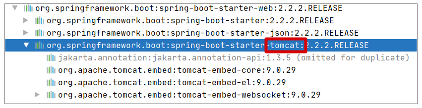
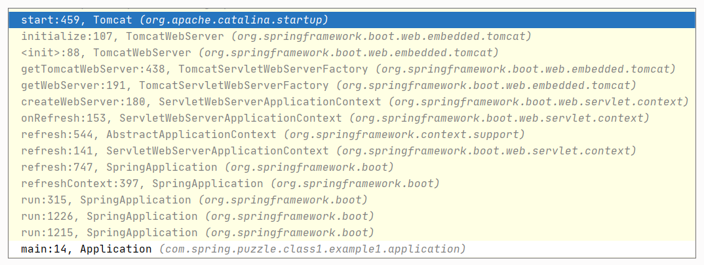
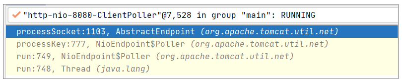
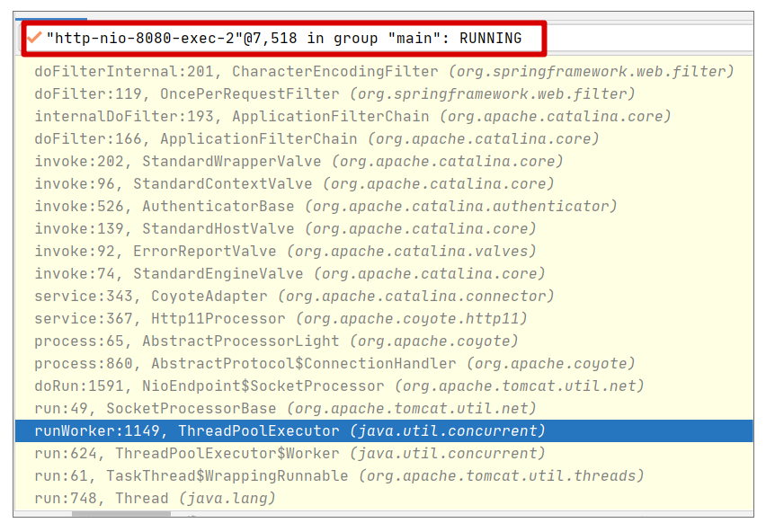
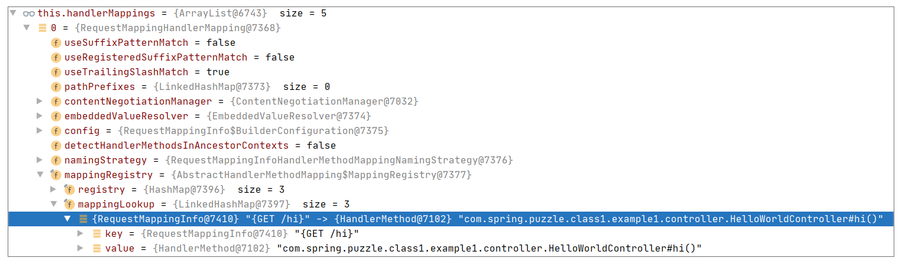
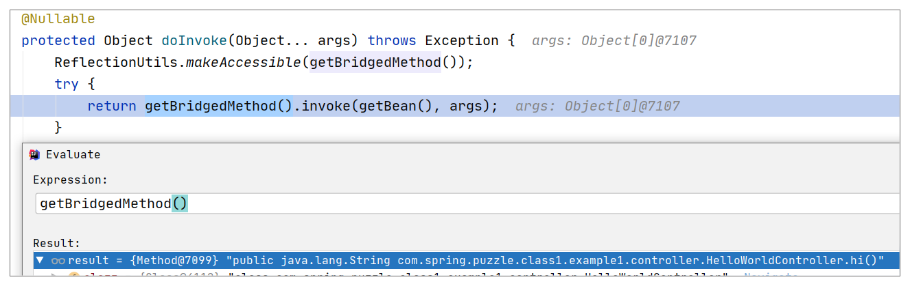
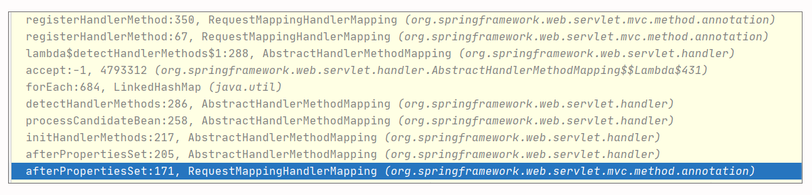

- 00 导读 5分钟轻松了解Spring基础知识.md.html
- 00 开篇词 贴心“保姆”Spring罢工了怎么办？.md.html
- 01 Spring Bean 定义常见错误.md.html
- 02 Spring Bean 依赖注入常见错误（上）.md.html
- 03 Spring Bean 依赖注入常见错误（下）.md.html
- 04 Spring Bean 生命周期常见错误.md.html
- 05 Spring AOP 常见错误（上）.md.html
- 06 Spring AOP 常见错误（下）.md.html
- 07 Spring事件常见错误.md.html
- 08 答疑现场：Spring Core 篇思考题合集.md.html
- 09 Spring Web URL 解析常见错误.md.html
- 10 Spring Web Header 解析常见错误.md.html
- 11 Spring Web Body 转化常见错误.md.html
- 12 Spring Web 参数验证常见错误.md.html
- 13 Spring Web 过滤器使用常见错误（上）.md.html
- 14 Spring Web 过滤器使用常见错误（下）.md.html
- 15 Spring Security 常见错误.md.html
- 16 Spring Exception 常见错误.md.html
- 17 答疑现场：Spring Web 篇思考题合集.md.html
- 18 Spring Data 常见错误.md.html
- 19 Spring 事务常见错误（上）.md.html
- 20 Spring 事务常见错误（下）.md.html
- 21 Spring Rest Template 常见错误.md.html
- 22 Spring Test 常见错误.md.html
- 23 答疑现场：Spring 补充篇思考题合集.md.html
- 导读 5分钟轻松了解一个HTTP请求的处理过程.md.html
- 知识回顾 系统梳理Spring编程错误根源.md.html
- 结束语 问题总比解决办法多.md.html
- 捐赠
导读 5分钟轻松了解一个HTTP请求的处理过程
你好，我是傅健。
上一章节我们学习了自动注入、AOP 等 Spring 核心知识运用上的常见错误案例。然而，我们使用 Spring 大多还是为了开发一个 Web 应用程序，所以从这节课开始，我们将学习Spring Web 的常见错误案例。
在这之前，我想有必要先给你简单介绍一下 Spring Web 最核心的流程，这可以让我们后面的学习进展更加顺利一些。
那什么是 Spring Web 最核心的流程呢？无非就是一个 HTTP 请求的处理过程。这里我以 Spring Boot 的使用为例，以尽量简单的方式带你梳理下。
首先，回顾下我们是怎么添加一个 HTTP 接口的，示例如下：
@RestController
public class HelloWorldController {
@RequestMapping(path = "hi", method = RequestMethod.GET)
public String hi(){
return "helloworld";
};
}
这是我们最喜闻乐见的一个程序，但是对于很多程序员而言，其实完全不知道为什么这样就工作起来了。毕竟，不知道原理，它也能工作起来。
但是，假设你是一个严谨且有追求的人，你大概率是有好奇心去了解它的。而且相信我，这个问题面试也可能会问到。我们一起来看看它背后的故事。
其实仔细看这段程序，你会发现一些关键的“元素”：
- 请求的 Path: hi
- 请求的方法：Get
- 对应方法的执行：hi()
那么，假设让你自己去实现 HTTP 的请求处理，你可能会写出这样一段伪代码：
public class HttpRequestHandler{
Map<RequestKey, Method> mapper = new HashMap<>();
public Object handle(HttpRequest httpRequest){
RequestKey requestKey = getRequestKey(httpRequest);
Method method = this.mapper.getValue(requestKey);
Object[] args = resolveArgsAccordingToMethod(httpRequest, method);
return method.invoke(controllerObject, args);
};
}
那么现在需要哪些组件来完成一个请求的对应和执行呢？
- 需要有一个地方（例如 Map）去维护从 HTTP path/method 到具体执行方法的映射；
- 当一个请求来临时，根据请求的关键信息来获取对应的需要执行的方法；
- 根据方法定义解析出调用方法的参数值，然后通过反射调用方法，获取返回结果。
除此之外，你还需要一个东西，就是利用底层通信层来解析出你的 HTTP 请求。只有解析出请求了，才能知道 path/method 等信息，才有后续的执行，否则也是“巧妇难为无米之炊”了。
所以综合来看，你大体上需要这些过程才能完成一个请求的解析和处理。那么接下来我们就按照处理顺序分别看下 Spring Boot 是如何实现的，对应的一些关键实现又长什么样。
首先，解析 HTTP 请求。对于 Spring 而言，它本身并不提供通信层的支持，它是依赖于Tomcat、Jetty等容器来完成通信层的支持，例如当我们引入Spring Boot时，我们就间接依赖了Tomcat。依赖关系图如下：

另外，正是这种自由组合的关系，让我们可以做到直接置换容器而不影响功能。例如我们可以通过下面的配置从默认的Tomcat切换到Jetty：
<dependency>
<groupId>org.springframework.boot</groupId>
<artifactId>spring-boot-starter-web</artifactId>
<exclusions>
<exclusion>
<groupId>org.springframework.boot</groupId>
<artifactId>spring-boot-starter-tomcat</artifactId>
</exclusion>
</exclusions>-
</dependency>
<!-- Use Jetty instead -->
<dependency>
<groupId>org.springframework.boot</groupId>
<artifactId>spring-boot-starter-jetty</artifactId>
</dependency>
依赖了Tomcat后，Spring Boot在启动的时候，就会把Tomcat启动起来做好接收连接的准备。
关于Tomcat如何被启动，你可以通过下面的调用栈来大致了解下它的过程：

说白了，就是调用下述代码行就会启动Tomcat：
SpringApplication.run(Application.class, args);
那为什么使用的是Tomcat？你可以看下面这个类，或许就明白了：
//org.springframework.boot.autoconfigure.web.servlet.ServletWebServerFactoryConfiguration
class ServletWebServerFactoryConfiguration {
@Configuration(proxyBeanMethods = false)
@ConditionalOnClass({ Servlet.class, Tomcat.class, UpgradeProtocol.class })
@ConditionalOnMissingBean(value = ServletWebServerFactory.class, search = SearchStrategy.CURRENT)
public static class EmbeddedTomcat {
@Bean
public TomcatServletWebServerFactory tomcatServletWebServerFactory(
//省略非关键代码
return factory;
}
}
@Configuration(proxyBeanMethods = false)
@ConditionalOnClass({ Servlet.class, Server.class, Loader.class, WebAppContext.class })
@ConditionalOnMissingBean(value = ServletWebServerFactory.class, search = SearchStrategy.CURRENT)
public static class EmbeddedJetty {
@Bean
public JettyServletWebServerFactory JettyServletWebServerFactory(
ObjectProvider<JettyServerCustomizer> serverCustomizers) {
//省略非关键代码
return factory;
}
}
//省略其他容器配置
}
前面我们默认依赖了Tomcat内嵌容器的JAR，所以下面的条件会成立，进而就依赖上了Tomcat：
@ConditionalOnClass({ Servlet.class, Tomcat.class, UpgradeProtocol.class })
有了Tomcat后，当一个HTTP请求访问时，会触发Tomcat底层提供的NIO通信来完成数据的接收，这点我们可以从下面的代码（org.apache.tomcat.util.net.NioEndpoint.Poller#run）中看出来：
@Override
public void run() {
while (true) {
//省略其他非关键代码
//轮询注册的兴趣事件
if (wakeupCounter.getAndSet(-1) > 0) {
keyCount = selector.selectNow();
} else {
keyCount = selector.select(selectorTimeout);
//省略其他非关键代码
Iterator<SelectionKey> iterator =
keyCount > 0 ? selector.selectedKeys().iterator() : null;
while (iterator != null && iterator.hasNext()) {
SelectionKey sk = iterator.next();
NioSocketWrapper socketWrapper = (NioSocketWrapper)
//处理事件
processKey(sk, socketWrapper);
//省略其他非关键代码
}
//省略其他非关键代码
}
}
上述代码会完成请求事件的监听和处理，最终在processKey中把请求事件丢入线程池去处理。请求事件的接收具体调用栈如下：

线程池对这个请求的处理的调用栈如下：

在上述调用中，最终会进入Spring Boot的处理核心，即DispatcherServlet（上述调用栈没有继续截取完整调用，所以未显示）。可以说，DispatcherServlet是用来处理HTTP请求的中央调度入口程序，为每一个 Web 请求映射一个请求的处理执行体（API controller/method）。
我们可以看下它的核心是什么？它本质上就是一种Servlet，所以它是由下面的Servlet核心方法触发：
javax.servlet.http.HttpServlet#service(javax.servlet.ServletRequest, javax.servlet.ServletResponse)
最终它执行到的是下面的doService()，这个方法完成了请求的分发和处理：
@Override
protected void doService(HttpServletRequest request, HttpServletResponse response) throws Exception {
doDispatch(request, response);
}
我们可以看下它是如何分发和执行的：
protected void doDispatch(HttpServletRequest request, HttpServletResponse response) throws Exception {
// 省略其他非关键代码
// 1. 分发：Determine handler for the current request.
HandlerExecutionChain mappedHandler = getHandler(processedRequest);
// 省略其他非关键代码
//Determine handler adapter for the current request.
HandlerAdapter ha = getHandlerAdapter(mappedHandler.getHandler());
// 省略其他非关键代码
// 2. 执行：Actually invoke the handler.
mv = ha.handle(processedRequest, response, mappedHandler.getHandler());
// 省略其他非关键代码
}
在上述代码中，很明显有两个关键步骤：
1. 分发，即根据请求寻找对应的执行方法
寻找方法参考DispatcherServlet#getHandler，具体的查找远比开始给出的Map查找来得复杂，但是无非还是一个根据请求寻找候选执行方法的过程，这里我们可以通过一个调试视图感受下这种对应关系：

这里的关键映射Map，其实就是上述调试视图中的RequestMappingHandlerMapping。
2. 执行，反射执行寻找到的执行方法
这点可以参考下面的调试视图来验证这个结论，参考代码org.springframework.web.method.support.InvocableHandlerMethod#doInvoke：

最终我们是通过反射来调用执行方法的。
通过上面的梳理，你应该基本了解了一个HTTP请求是如何执行的。但是你可能会产生这样一个疑惑：Handler的映射是如何构建出来的呢？
说白了，核心关键就是RequestMappingHandlerMapping这个Bean的构建过程。
它的构建完成后，会调用afterPropertiesSet来做一些额外的事，这里我们可以先看下它的调用栈：

其中关键的操作是AbstractHandlerMethodMapping#processCandidateBean方法：
protected void processCandidateBean(String beanName) {
//省略非关键代码
if (beanType != null && isHandler(beanType)) {
detectHandlerMethods(beanName);
}
}
isHandler(beanType)的实现参考以下关键代码：
@Override
protected boolean isHandler(Class<?> beanType) {
return (AnnotatedElementUtils.hasAnnotation(beanType, Controller.class) ||
AnnotatedElementUtils.hasAnnotation(beanType, RequestMapping.class));
}
这里你会发现，判断的关键条件是，是否标记了合适的注解（Controller或者RequestMapping）。只有标记了，才能添加到Map信息。换言之，Spring在构建RequestMappingHandlerMapping时，会处理所有标记Controller和RequestMapping的注解，然后解析它们构建出请求到处理的映射关系。
以上即为Spring Boot处理一个HTTP请求的核心过程，无非就是绑定一个内嵌容器（Tomcat/Jetty/其他）来接收请求，然后为请求寻找一个合适的方法，最后反射执行它。当然，这中间还会掺杂无数的细节，不过这不重要，抓住这个核心思想对你接下来理解Spring Web中各种类型的错误案例才是大有裨益的！
© 2019 - 2023 Liangliang Lee. Powered by gin and hexo-theme-book.